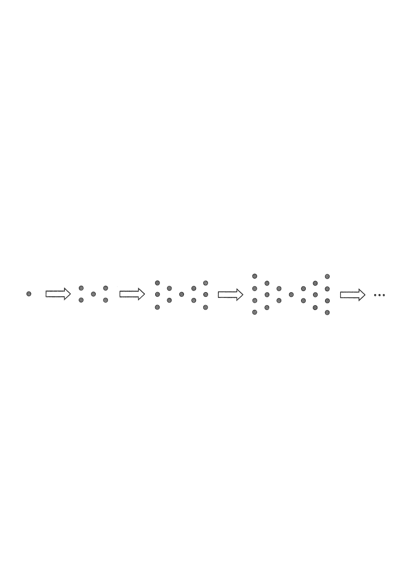

HKDSE Mathematics 2017 · Paper 2 · Q13
Topic 5 — Formulas and Sequences
Scroll the solution to see each step highlighted in the figure.
Given dot / base patternNewly added dotsSequence values
[2017 MC #13]
In the figure, the 1st pattern consists of $1$ dot. For any positive integer $n$, the
$(n+1)$th pattern is formed by adding $(2n+2)$ dots to the $n$th pattern.
Find the number of dots in the 7th pattern.
A. 41
B. 55
C. 71
D. 161

Figure (original exam diagram)
STEP 1 · Set up the notation
Let $T(n)$ be the number of dots in the $n$th pattern.
Recurrence Relation\(T(n+1)=T(n)+(2n+2),\quad T(1)=1\)Each pattern adds \(2n+2\) dots to the previous one, starting from \(T(1)=1\).
From the question: the rule is $T(n+1)=T(n)+(2n+2)$, and the starting value is
$$T(1)=1 .$$
Hint: Always name your sequence first and write down the first term.
STEP 2 · List the increments
For $n=1,2,3,\dots$ the number of dots added is
$$2n+2 = 4,\ 6,\ 8,\ 10,\ 12,\ 14,\ \dots$$
So to reach the 7th pattern we start at $T(1)$ and add $6$ increments (for $n=1$ up to $n=6$).
Hint: Going from the 1st to the 7th pattern needs $7-1=6$ additions.
STEP 3 · Recurse from $T(7)$
$$T(7)=T(6)+14 \quad (\text{using } n=6)$$
$$=T(5)+12+14 \quad (\text{using } n=5)$$
$$\ \ \vdots$$
$$=T(1)+4+6+8+10+12+14 .$$
Hint: Keep substituting until you reach the known value $T(1)$.
STEP 4 · Evaluate the sum
Sum of an Arithmetic Series\(S=\dfrac{n\,(a+\ell)}{2}\)The increments \(4,6,\dots,14\) form an A.S. with \(6\) terms, so the sum is \(\dfrac{6(4+14)}{2}=54\).
$$T(7)=1+(4+6+8+10+12+14)$$
The bracket is an arithmetic series with first term $4$, last term $14$, $6$ terms:
$$4+6+8+10+12+14=\frac{6(4+14)}{2}=54 .$$
So
$$T(7)=1+54=55 .$$
Hint: Sum of an A.S. $=\dfrac{\text{no. of terms}\times(\text{first}+\text{last})}{2}$.
STEP 5 · Check against the options
$T(7)=55$, which matches option B.
Checking with a Closed Form\(T(n)=n^{2}+n-1\)The closed form gives \(T(7)=49+7-1=55\), confirming the recurrence result.
(Note: $T(n)=n^2+n-1$ gives $T(7)=49+7-1=55$ — a quick verification.)
Hint: A closed-form check guards against arithmetic slips.
Answer: B (55 dots)
The 7th pattern contains 55 dots.
PRACTICESimilar question — try it yourself
Question. The number of dots in the \(n\)th pattern of a sequence is \(T(n)\), where \(T(n+1)=T(n)+(3n+1)\) and \(T(1)=2\). Find \(T(6)\).
Show the worked solution
Step 1. The increments for \(n=1,2,3,4,5\) are \(4,7,10,13,16\).
Step 2. Reaching the 6th pattern needs \(6-1=5\) additions, so \(T(6)=T(1)+(4+7+10+13+16)\).
Step 3. The bracket is an A.S. with first term \(4\), last term \(16\) and \(5\) terms: sum \(=\dfrac{5(4+16)}{2}=50\).